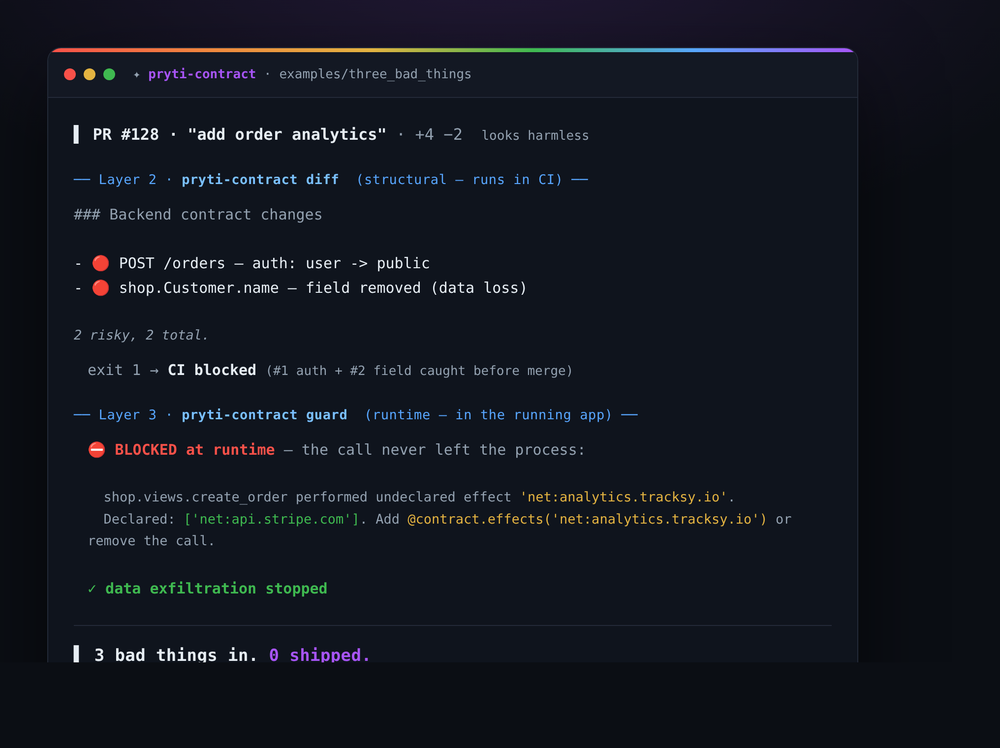

See it
What changed → how it flows → where to look
A ranked list, an interactive flow graph for every change, and the exact file:line locations — in the terminal, a web UI, a PR comment, or your Security tab.

Git tells you what lines changed. Lenscheck tells you what they mean — and points you at the exact line to read.
A deterministic semantic PR reviewer for Python web apps. No AI black box, no API key, no per-PR token bill — same PR in, same review out, every time.
pip install lenscheck-semantic-reviewer
pip install lenscheck-contract
Lenscheck looks at your backend from both sides — the diff from the outside and the running app from the inside. Each catches what the other structurally can't.
Outside-in. A GitHub Action / CLI that reads the PR diff (AST, no LLM) and comments on what actually changed and where to look. Lives in your CI — zero code, zero setup.
pip install lenscheck-semantic-reviewer · PyPI ↗
Inside-out. A library inside your Django app that records what it really does — routes, models, effects — fails CI on a risky change, and blocks undeclared calls at runtime.
pip install lenscheck-contract · PyPI ↗
$ lenscheck-contract invariants -o invariants.json # the app's real declared egress + rules $ lenscheck review <repo> --pr 128 --invariants invariants.json # the reviewer stops guessing
On its own the reviewer guesses your invariants from git history. lenscheck-contract hands it the truth instead: your app's declared destinations become an enforced allowlist, so a brand-new domain sneaking into a PR is a 🔴 critical alert — grounded in fact, not a hunch. See the full docs →
Static analysis can't see routers, loops, or mixins — but Django already resolved all of it at startup. So lenscheck-contract asks the running app instead of parsing files.
Reads Django's real router + model registry → contract.json. Coverage reported, not hidden.
Mark the routes + effects that matter — a decorator that looks like every Django one.
One hook at the socket layer: an undeclared call fails loudly. The bad code doesn't ship.
A PR that "looks harmless" — caught on two layers: structural (the CI diff) and runtime (the guard).

A normal line-diff buries the one change that matters — "user email now leaves the server" — under thousands of mechanical edits. You don't need to read all of it. You need to know what changed in behavior, how it flows, where to look, and whether it broke a promise.
# 17,841 lines changed → 3 things to actually look at 🔴 NEW ENDPOINT /api/companions/payment why: new endpoint exposes a PII path with open/unspecified auth flow: /api/companions/payment → CompanionPayment → {Order:write} → ext: PayTM investigate: payment_views.py:90 email → requests.post @ services.py:9 🟠 CHANGED /api/orders/invoice why: new external call: razorpay.post · money path 🟢 REFACTOR /api/users/profile handler renamed, semantics unchanged — nothing to see
No running your code. No guessing. Just Python's own parser (AST) reading structure — the same three boxes, small.
code → behavior facts
facts → what changed
rank + point at the line
A ranked list, an interactive flow graph for every change, and the exact file:line locations — in the terminal, a web UI, a PR comment, or your Security tab.
Because on an 18,000-line PR you can't — and the usual alternatives either guess, or miss what actually matters.
It reads your code with Python's own parser and reports what's there — it never runs it, and never guesses. Every finding traces to a file:line, so there's nothing to fact-check.
A tool that wrongly says "all clear" ships the bug. Lenscheck fails toward look here — ✓ / ⚠ / ? — and never renders "didn't see it" as "it's safe."
Facts are matched on the URL route, not class names. Rename every class in the repo and a pure refactor produces zero noise — so the real change stands out.
It learns the promises your codebase already keeps and flags the PR that breaks one. That confirmed corpus is yours — the piece a competitor can't clone.
| Read the diff | AI reviewers | Static scanners | Lenscheck | |
|---|---|---|---|---|
| Survives an 18k-line PR | ✗ | ~ | ~ | ✓ |
| No hallucinations | ✓ | ✗ | ✓ | ✓ |
| Honest about what it can't tell | — | ✗ | ~ | ✓ |
| Refactor-stable (renames = no noise) | ✗ | ✗ | ✗ | ✓ |
| Learns your team's own rules | ✗ | ✗ | ✗ | ✓ |
| Zero config, zero dependencies | ✓ | ✗ | ~ | ✓ |
It doesn't replace your tests or type-checker — it sees a different layer: behavior at the endpoint, and whether a change broke a promise.
It reads your code with Python's own parser — it never runs it — and reports facts, not guesses.
| route → handler | which URL maps to which view? |
| auth | does it require a login / permission? |
| db tables | which tables does it read and write? — resolved to the real SQL table name |
| external calls | does it call another service (payment, email, …)? |
| async | does it kick off a background job / thread / signal? |
| cache | does it read or invalidate a cache key? |
| PII | does personal data travel toward something that leaves the app? |
It will never say "no PII leaves here" when it just didn't see it. Absence is shown as unknown, never as safe.
Same facts, three surfaces — pick whatever fits your workflow.
lenscheck review — a ranked review right in your terminal or CI logs.
lenscheck serve — an interactive flow graph and where-to-look, in your browser.
A sticky comment, inline notes, and an optional merge gate on every pull request.

A property your codebase kept for 800 commits was almost certainly on purpose. Lenscheck mines your git history, surfaces those rules, you confirm the real ones — and then every PR that breaks one gets flagged, with the exact commit that broke it.

The exact field → the exact line where it leaves. Traced, not guessed.
Flags a bumped package that newly gains network / subprocess / native code.
PR says "just a refactor" but added an endpoint? Caught — from facts, not an LLM.
Each finding pinned to the exact changed line, plus a sticky summary and a triage label.
Findings in the Security tab, and an optional merge gate on a broken rule.
lenscheck digest counts the open risky PRs across every repo — one number for leadership.
No — it's a diff. It only speaks up about what a PR actually changed, and it labels anything uncertain "look here," never "safe." Roll it out in observe mode and you'll see the signal before it can ever block a merge.
Nothing. It's a pure-Python-standard-library package with zero third-party dependencies. Point it at a repo (local path or GitHub URL) and go — no config file, no server, no account.
No. There's no LLM in the analysis — so there's nothing to hallucinate, no API key to wire up, and no per-PR token bill. It reads your code with Python's parser and reports facts; every finding traces to an exact file:line, and the same PR always produces the same review. That's the whole point: LLM reviewers are smart but drift and cost tokens; Lenscheck is deterministic and free.
Never. It reads code statically and analyzes clean git snapshots (via git archive) in a temp folder — it doesn't execute anything or touch your working tree. Safe to point at any repo.
Its lens is endpoint-centric (Django & Django REST Framework today). On a repo it can't read, it simply finds nothing to report — it won't invent false alarms. More frameworks (FastAPI, …) are on the roadmap.
No. The review, PR comments, labels, gating, and the org roll-up all work without it. GHAS only powers the optional SARIF Security-tab dashboard.
Yes — under the Elastic License 2.0: free to use, self-host, and modify. You just can't resell it as a hosted service.
Needs Python 3.8+, plus git and tar. That's the whole install.
pip install lenscheck-semantic-reviewer
lenscheck review https://github.com/owner/repo --pr 481
cd your-repo && lenscheck serve